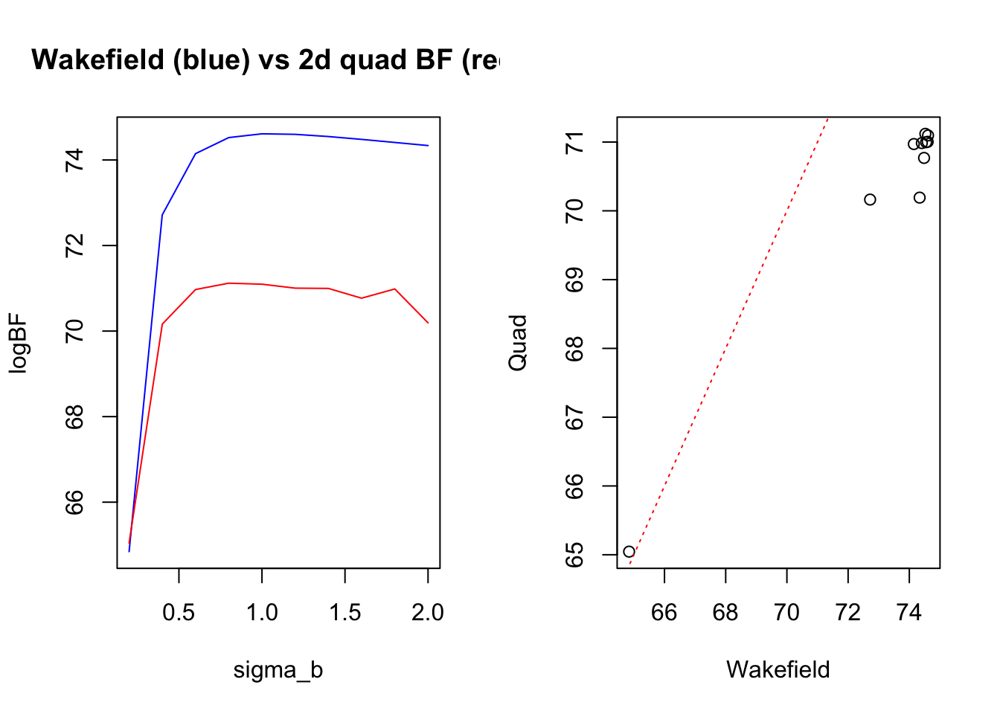
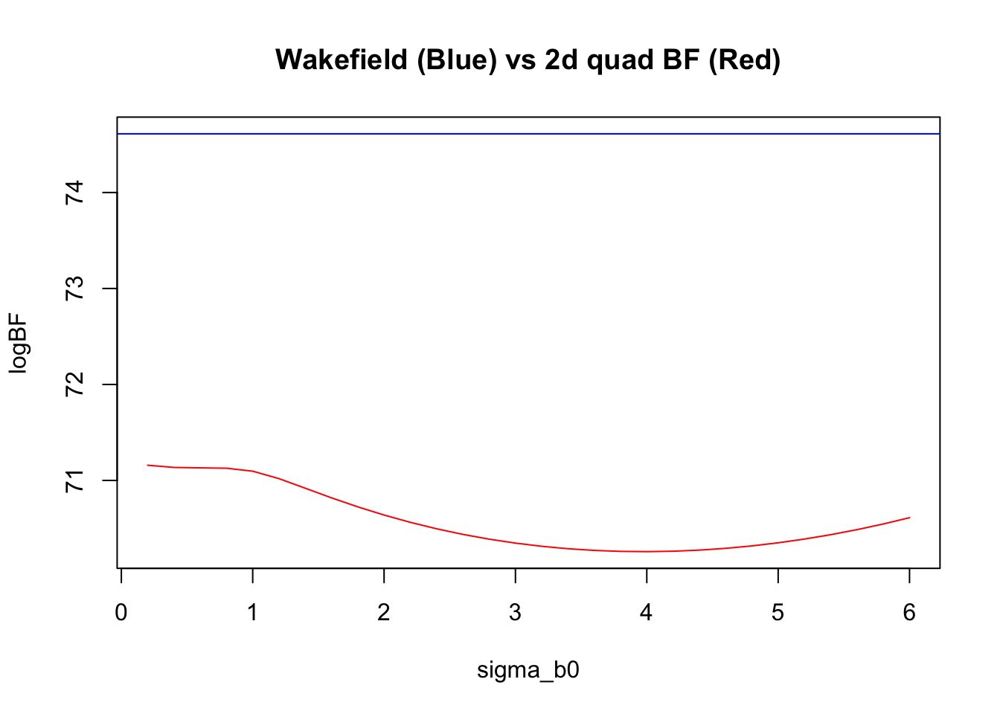

Last updated: 2022-10-11
Checks: 7 0
Knit directory: logistic-susie-gsea/
This reproducible R Markdown analysis was created with workflowr (version 1.7.0). The Checks tab describes the reproducibility checks that were applied when the results were created. The Past versions tab lists the development history.
Great! Since the R Markdown file has been committed to the Git repository, you know the exact version of the code that produced these results.
Great job! The global environment was empty. Objects defined in the global environment can affect the analysis in your R Markdown file in unknown ways. For reproduciblity it’s best to always run the code in an empty environment.
The command set.seed(20220105) was run prior to running
the code in the R Markdown file. Setting a seed ensures that any results
that rely on randomness, e.g. subsampling or permutations, are
reproducible.
Great job! Recording the operating system, R version, and package versions is critical for reproducibility.
Nice! There were no cached chunks for this analysis, so you can be confident that you successfully produced the results during this run.
Great job! Using relative paths to the files within your workflowr project makes it easier to run your code on other machines.
Great! You are using Git for version control. Tracking code development and connecting the code version to the results is critical for reproducibility.
The results in this page were generated with repository version 93b6b2c. See the Past versions tab to see a history of the changes made to the R Markdown and HTML files.
Note that you need to be careful to ensure that all relevant files for
the analysis have been committed to Git prior to generating the results
(you can use wflow_publish or
wflow_git_commit). workflowr only checks the R Markdown
file, but you know if there are other scripts or data files that it
depends on. Below is the status of the Git repository when the results
were generated:
Ignored files:
Ignored: .DS_Store
Ignored: .RData
Ignored: .Rhistory
Ignored: .Rproj.user/
Ignored: _targets.R
Ignored: _targets.html
Ignored: _targets.md
Ignored: _targets/objects/
Ignored: _targets/user/
Ignored: _targets/workspaces/
Ignored: _targets_r/
Ignored: cache/
Ignored: data/.DS_Store
Ignored: data/adipose_2yr_topsnp.txt
Ignored: data/anthony/
Ignored: data/de-droplet/
Ignored: data/de-microplastics/
Ignored: data/deng/
Ignored: data/fetal_reference_cellid_gene_sets.RData
Ignored: data/human_chimp_eb/
Ignored: data/pbmc-purified/
Ignored: data/wenhe_baboon_diet/
Ignored: data/yusha_sc_tumor/
Ignored: library/
Ignored: renv/
Ignored: staging/
Untracked files:
Untracked: .ipynb_checkpoints/
Untracked: Master's Paper.pdf
Untracked: Project_1652928411/
Untracked: Project_1653228324/
Untracked: Project_1653228355/
Untracked: VEB_Boost_Proposal_Write_Up (1).pdf
Untracked: _targets/meta/
Untracked: additive.l5.gonr.aggregate.scores
Untracked: analysis/2022_09_22_pdac_example.Rmd
Untracked: analysis/alpha_ash_v_point_normal.Rmd
Untracked: analysis/compare_w_post_hoc_clustering.Rmd
Untracked: analysis/compute_exact_BFs.Rmd
Untracked: analysis/de_droplet_noshrink.Rmd
Untracked: analysis/de_droplet_noshrink_logistic_susie.Rmd
Untracked: analysis/exact_logistic_ser.Rmd
Untracked: analysis/fetal_reference_cellid_gsea.Rmd
Untracked: analysis/fixed_intercept.Rmd
Untracked: analysis/gsea_made_simple.Rmd
Untracked: analysis/iDEA_examples.Rmd
Untracked: analysis/latent_gene_list.Rmd
Untracked: analysis/linear_method_failure_modes.Rmd
Untracked: analysis/linear_regression_failure_regime.Rmd
Untracked: analysis/linear_v_logistic_pbmc.Rmd
Untracked: analysis/logistic_susie_rss.Rmd
Untracked: analysis/logistic_susie_veb_boost_vs_vb.Rmd
Untracked: analysis/logistic_susie_vis.Rmd
Untracked: analysis/logistic_variational_bound.Rmd
Untracked: analysis/logsitic_susie_template.Rmd
Untracked: analysis/normal_means.Rmd
Untracked: analysis/pcb_scratch.Rmd
Untracked: analysis/references.bib
Untracked: analysis/roadmap.Rmd
Untracked: analysis/sc_tumor_followup.Rmd
Untracked: analysis/simulations.Rmd
Untracked: analysis/simulations_l1.Rmd
Untracked: analysis/tccm_vs_logistic_susie.Rmd
Untracked: analysis/template.Rmd
Untracked: analysis/test.Rmd
Untracked: analysis/z_score_vs_threshold.Rmd
Untracked: build_site.R
Untracked: code/binromial_ser.R
Untracked: code/html_tables.R
Untracked: code/latent_logistic_susie.R
Untracked: code/logistic_susie_data_driver.R
Untracked: code/marginal_sumstat_gsea_collapsed.R
Untracked: code/point_normal.R
Untracked: code/sumstat_gsea.py
Untracked: code/susie_gsea_queries.R
Untracked: docs.zip
Untracked: export/
Untracked: figure/
Untracked: l1.sim.aggregate.scores
Untracked: logistic_regression.stan
Untracked: pbmc_cd19_symbol.txt
Untracked: pbmc_cd19b_0.1_background.csv
Untracked: pbmc_cd19b_0.1_david_annotation_clusters.txt
Untracked: pbmc_cd19b_0.1_david_results.txt
Untracked: pbmc_cd19b_0.1_list.csv
Untracked: presentations/
Untracked: references.bib
Unstaged changes:
Modified: analysis/example_pbmc.Rmd
Note that any generated files, e.g. HTML, png, CSS, etc., are not included in this status report because it is ok for generated content to have uncommitted changes.
These are the previous versions of the repository in which changes were
made to the R Markdown
(analysis/approximate_bayes_factors.Rmd) and HTML
(docs/approximate_bayes_factors.html) files. If you’ve
configured a remote Git repository (see ?wflow_git_remote),
click on the hyperlinks in the table below to view the files as they
were in that past version.
| File | Version | Author | Date | Message |
|---|---|---|---|---|
| Rmd | 93b6b2c | Karl Tayeb | 2022-10-11 | wflow_publish("analysis/approximate_bayes_factors.Rmd") |
| html | b042d2e | Karl Tayeb | 2022-10-11 | Build site. |
| Rmd | 68bf2ea | Karl Tayeb | 2022-10-11 | wflow_publish("analysis/approximate_bayes_factors.Rmd") |
cache_rds <- purrr::partial(xfun::cache_rds, dir='cache/aproximate_bayes_factors/')Here we compare several approximate Bayes factor computations
TLDR: The 1d quadrature and VB show strong agreement. This makes sense because the the fixed intercept model is the target VB is approximating (and then optimizing over intercept as well).
Neither 1D quadrature BF of VB BF agree with the Wakefield’s ABF. And Wakefield’s ABF doesn’t really agree with either of the 2d quadrature approaches. Furthermore the 2d quadrature BFs are sensitive to the prior we put on the non-effect parameter. This is not surprising for the intercept model, but discouraging for the reparameterized model (where we expect the terms involving the intercept to approximately cancel out in the BF computation).
sigmoid <- function(x){
return(1 / (1 + exp(-x)))
}
logodds <- function(p){
return(log(p) - log(1-p))
}
update_intercept <- function(x, y, mu, tau, xi, delta, tau0){
kappa = y - 0.5
xb <- (x * mu)
omega <- logisticsusie:::pg_mean(1, xi)
return(sum(kappa - xb * omega)/sum(omega))
}
update_b <- function(x, y, mu, tau, xi, delta, tau0){
omega <- logisticsusie:::pg_mean(1, xi)
kappa = y - 0.5
tau <- sum(omega * x^2) + tau0
nu <- sum((kappa - omega*delta) * x)
return(list(mu = nu/tau, tau=tau))
}
update_xi <- function(x, y, mu, tau, xi, delta, tau0){
xb2 <- x^2 * (mu^2 + 1/tau) + 2*x*mu*delta + delta^2
return(sqrt(xb2))
}
compute_elbo <- function(x, y, mu, tau, xi, delta, tau0){
kappa = y - 0.5
xb <- (x * mu) + delta
bound <- log(sigmoid(xi)) + (kappa * xb) - (0.5 * xi)
kl <- logisticsusie:::normal_kl(mu, 1/tau, 0, 1/tau0)
return(sum(bound) - kl)
}
# include the term that cancels out when xi is up-to-date
compute_elbo2 <- function(x, y, mu, tau, xi, delta, tau0){
kappa = y - 0.5
xb <- (x * mu) + delta
xb2 <- x^2 * (mu^2 + 1/tau) + 2*x*mu*delta + delta^2
omega <- logisticsusie:::pg_mean(1, xi)
bound <- log(sigmoid(xi)) + (kappa * xb) - (0.5 * xi) + 0.5 * omega * (xi^2 - xb2)
kl <- logisticsusie:::normal_kl(mu, 1/tau, 0, 1/tau0)
return(sum(bound) - kl)
}
.monotone <- logisticsusie:::.monotone
fit_univariate_vb <- function(x, y, delta.init=0, tau0=1, estimate_intercept=T){
# init
mu <- 0
tau <- 1
delta <- delta.init
xi <- update_xi(x, y, mu, tau, 1, delta, tau0)
xi <- pmax(xi, 1e-3)
elbos <- compute_elbo(x, y, mu, tau, xi, delta, tau0)
for(i in seq(20)){
# rep
if(estimate_intercept){
delta <- update_intercept(x, y, mu, tau, xi, delta, tau0)
}
b <- update_b(x, y, mu, tau, xi, delta, tau0)
mu <- b$mu
tau <- b$tau
xi <- update_xi(x, y, mu, tau, xi, delta, tau0)
elbos <- c(elbos, compute_elbo(x, y, mu, tau, xi, delta, tau0))
if(diff(tail(elbos, 2)) < 1e-5){
break
}
}
converged = diff(tail(elbos, 2)) < 1e-5
monotone = logisticsusie:::.monotone(elbos)
p_mle <- mean(y)
BF = exp(tail(elbos, 1) - sum(dbinom(y, 1, p_mle, log = T)))
return(list(x=x, y=y,
mu=mu, tau=tau, xi=xi, delta=delta, tau0=tau0,
BF=BF,
elbos=elbos,
converged=converged,
monotone=monotone))
}# Compute ln(ABF) where ABF is Wakefields Approximate Bayes Factor
compute_lnabf <- function(z, V, W){
lnabf <- -(log(sqrt((V+W)/V)) + (- 0.5 * z^2 * W / (V+W)))
return(lnabf)
}
# Compute likelihood conditional on effect size y ~ Bernoulli(sigmoid(x*b + delta))
conditional_likelihood <- function(x, y, b, delta=0, log=F) {
p <- sigmoid(x*b + delta)
ll <- sum(dbinom(y, 1, p, log=T))
if(!log){
ll <- exp(ll) # rescale for numerical stability?
}
return(ll)
}Here we quickly recreate figure one from Wakefield’s ABF paper to confirm we are computing it right.
z <- 4
W <- 0.21^2
f <- function(V){exp(compute_lnabf(z, V, W))}
plot(f, xlim = c(0, 0.025))
| Version | Author | Date |
|---|---|---|
| b042d2e | Karl Tayeb | 2022-10-11 |
There are a few packages in R that just give the quadrature points and their associated weights so that you can compute
\[ \int f(x) dx \approx \sum w_i f(x_i) \]
We are computing the evidence \(p(y) = \int \left(\prod p(y_i | b, b_0)\right) p(b, b_0) dbdb_0 = \int f(b, b_0) dbd_0\). Because this involved the product of many probabilities it can get quite small and we can run into underflow issues. An option to deal with this is to re scale the function when computing the integral.
Alternatively, since we are dealing with non-negative probabilities,
we can compute the sum on the RHS of the approximate inequality on the
log scale, which is much better numerically. That is what we do here.
The R package statmod::gaus.quad.prob supply the quadrature
points and weights so this computation is easy to carry out.
\[ \log \sum w_i f(x_i) = \log\sum\exp\{\log f(x_i) + \log(w_i)\} \]
We compute the evidence \(p(y)\) numerically via quadrature, and approximately via Wakefields ABF and the Polya-Gamma/Jaakkola-Jordan variational approximation. We confirm that the ELBO is indeed a lower bound for the evidence. Furthermore, for this simple example the bound is quite tight.
# simulate some data
sigmoid <- function(x) {1/(1 + exp(-x))}
x <- rnorm(1000)
b0 <- 0
b1 <- 0.1
y <- rbinom(length(x), 1, sigmoid(x))
# compute MLE
glmfit <- glm(y ~ x, family='binomial')
coef <- summary(glmfit)$coef
b0_mle <- coef[1,1]
# evidence compute via quadrature (FIXED INTERCEPT)
evidence <- gseasusie:::compute_evidence_quadrature_fixed_b0(
as.matrix(x, ncol=1), y, 0, b0=b0_mle, params = list(b_mu=0, b_sigma=1), n=2048)computing approximate evidence via quadrature (fixed b0)...2.903 sec elapsed# ELBO via VB (FIXED INTERCEPT)
vb <- fit_univariate_vb(x, y, delta.init=b0_mle, tau0=1, estimate_intercept = F)
elbo <- tail(vb$elbos, 1)
# check its a lower bound
evidence > elbo[1] TRUE# p(y)/ELBO-- ideally close to, but a bit larger than, 1
# since denom is (hopefully) a tight lower bound to the numerator
exp(evidence - elbo)[1] 1.229793Here we show three different computations of the evidence under the null model. First we simply compute the log likelihood of MLE for the intercept-only model. Second, we compute the evidence in the limiting case where \(\sigma_b \approx 0\)– exactly using quadrature and approximately using the VB method.
The latter two approaches agree perfectly (this is not suprising, since there is nothing really to approximate). I think it should also agree with the log likelihood of the intercept-only MLE, but there is a slight discrepency.
# null likelihod == mLE of intercept only model
null1 <- conditional_likelihood(x, y, 0, logodds(mean(y)), log = T)
# null likelihood as the model with negligible prior variance on b
null2 <- gseasusie:::compute_evidence_quadrature_fixed_b0(
as.matrix(x, ncol=1), y, 0, b0=b0_mle, params = list(b_mu=0, b_sigma=1e-10), n=2048)computing approximate evidence via quadrature (fixed b0)...0.231 sec elapsed# null likelihood as the model with negligible prior variance on b, VB
nullvb <- fit_univariate_vb(
x, y, delta.init=b0_mle, tau0=1e10, estimate_intercept = F)
null3 <- tail(nullvb$elbos, 1)
print('Three computations of the null model likelihood')[1] "Three computations of the null model likelihood"print(paste(c('Fixed-intercept MLE:', null1)))[1] "Fixed-intercept MLE:" "-689.615019877552" print(paste(c('Fixed-intercept 1d null:', null2)))[1] "Fixed-intercept 1d null:" "-690.28955078125" print(paste(c('Fixed-intercept VB null:', null2)))[1] "Fixed-intercept VB null:" "-690.28955078125" The evidence computations agree, so the BFs will also agree…
quad1d_bf <- evidence - null2
vb_bf <- elbo - null2
print(quad1d_bf)[1] 103.3082print(vb_bf)[1] 103.1014Evidently there is a pretty big discrepancy between the Wakefield ABF and the BFs computed by 2d quadrature (we specify normal priors on both \(b\) and \(b_0\)).
Here we compute the BF via 2d quadrature. We compute the evidence for the null model by computing the 2d quadrature with \(b \sim N(0, \sigma_^2_b \approx 0)\)
# 2d integral function
compute_2d_bf <- function(b_sigma, b0_sigma, n=128){
evidence_h1 <- gseasusie:::compute_evidence_quadrature_2d(
as.matrix(x, ncol=1), y, offset=0,
params = list(b_mu=0, b_sigma=b_sigma, b0_mu=0, b0_sigma=b0_sigma), n=n)
evidence_h0 <- gseasusie:::compute_evidence_quadrature_2d(
as.matrix(x, ncol=1), y, offset=0,
params = list(b_mu=0, b_sigma=1e-10, b0_mu=0, b0_sigma=b0_sigma), n=n)
quad2d_lnbf <- evidence_h1 - evidence_h0
return(quad2d_lnbf)
}
compute_wakefield <- function(b_sigma){
compute_lnabf(coef[2, 3], coef[2,2]^2, b_sigma^2)
}
wakefield <- compute_lnabf(coef[2, 3], coef[2,2]^2, 1)
print(paste('ln Wakefield ABF: ,', compute_wakefield(1)))[1] "ln Wakefield ABF: , 74.611621134862"print(paste('ln BF (2d quadrature): ,', compute_2d_bf(1.0, 1.0, n=1024)))computing evidence via quadrature...12.125 sec elapsedcomputing evidence via quadrature...4.782 sec elapsed
[1] "ln BF (2d quadrature): , 102.731628417969"First, although there is a big gap between the log ABFs and quadrature log BFs, they seem more or less of by a constant when we vary the prior variance of the effect.
b_sigma_grid <- seq(0.2, 2, by=0.2)
wakefield_b_sigma <- purrr::map_dbl(b_sigma_grid, ~compute_lnabf(coef[2, 3], coef[2,2]^2, .x^2))
bfs_2d_b_sigma<- cache_rds(
purrr::map_dbl(b_sigma_grid, ~compute_2d_bf(.x, 1, n=512)),
file='2d_quad_b_sigma'
)
par(mfrow=c(1,2))
plot(
b_sigma_grid, wakefield_b_sigma,
type='l',
ylim=range(c(wakefield_b_sigma, bfs_2d_b_sigma)),
ylab = 'logBF',
xlab = 'sigma_b',
col='blue',
main='Wakefield (blue) vs 2d quad BF (red)'
)
lines(b_sigma_grid, bfs_2d_b_sigma, col='red')
plot(wakefield_b_sigma, bfs_2d_b_sigma, xlab='Wakefield', ylab='Quad');
abline(0, 1, lty=3, col='red')
In contrast, changing the prior on the intercept does not effect the ABF, but it does impact the 2d quadrature BF.
b0_sigma_grid <- seq(0.2, 6, by=0.2)
wakefield <- compute_lnabf(coef[2, 3], coef[2,2]^2, 1)
bfs_2d_b0_sigma<- cache_rds(
purrr::map_dbl(b0_sigma_grid, ~compute_2d_bf(1, .x, n=512)),
file='2d_quad_b0_sigma'
)
plot(
b0_sigma_grid, bfs_2d_b0_sigma,
type='l',
ylim=range(c(bfs_2d_b0_sigma, wakefield)),
ylab = 'logBF',
xlab = 'sigma_b0',
col='red',
main='Wakefield (Blue) vs 2d quad BF (Red)'
)
abline(h=wakefield, col='blue')
Here we pursue a reparameterization of the logistic regression, that reduces the statistical dependence between the estimate of the effect and the intercept. Following the appendix of Wakefield’d ABF paper. We start by considering the logistic regression model:
\[ \log \frac{p_i}{1 - p_i} = b_0 + bx \]
The MLE for logistic regression (under some conditions) is consistent and asymptotically normal
\[ \begin{bmatrix}\hat b_0 \\ \hat b \end{bmatrix} \sim N\left(\begin{bmatrix} b_0 \\ b \end{bmatrix}, \begin{bmatrix} I_{00} & I_{01} \\ I_{10} & I_{11} \end{bmatrix}^{-1}\right) \]
But we can re-parameterize the model to (asymptotically) get rid of the covariance between these estimates. Specifically we can replace \(b_0\) with the parameter \(\beta_0 = b_0 + \frac{I_{00}}{I_{01}} b\) which yields
\[ \begin{bmatrix}\hat \beta_0 \\ \hat b \end{bmatrix} \sim N\left(\begin{bmatrix} b_0 \\ b \end{bmatrix}, \begin{bmatrix} I_{00} & 0 \\ 0 & I_{11} \end{bmatrix}^{-1}\right) \]
By specifying independent priors \(p(\beta_0, b) = p(\beta_0)p(\beta)\) the posterior factorizes. Wakefield takes advantage of this by only “integrating” over the effect estimate (since the integral involving the intercept cancels in the numerator and denominator). For them, it has the effect of only needing the effect estimate and it’s standard error (disregarding the intercept).
\[ BF = \frac{p(\hat\beta, \hat\theta | H_1)}{p(\hat\beta, \hat\theta | H_0)} \approx \frac{\int p(\hat \beta | \beta)p(\beta) \times \int p(\hat \theta | \theta)p(\theta)}{\int p(\hat \beta | \beta)p(\beta) \times p(\hat \theta | \theta =0)} = \frac{\int p(\hat \theta | \theta)p(\theta)}{p(\hat \theta | \theta =0)} = ABF \]
Below we impliment 2d quadrature for this re-parameterization. We don’t get around integrating over two parameters– but we still hope the \(\int p(\hat \beta | \beta)p(\beta)\) will cancel out the numerator and denominator.
compute_info <- function(x, y){
logits <- predict(glm(y ~ x))
p1p <- sigmoid(logits) * sigmoid(-logits)
I00 <- - sum(p1p)
I01 <- -sum(p1p * x)
return(I01/I00)
}
log_joint_reparam <- function(x, y, b, b0, b_mu, b_sigma, beta_mu, beta_sigma, I01I00){
beta <- b0 + I01I00 * b
log_joint <- conditional_likelihood(x, y, b, b0, log=T) +
dnorm(b, b_mu, b_sigma, log=T) +
dnorm(beta, beta_mu, beta_sigma, log=T)
return(log_joint)
}
quad2d_reparam <- function(x, y, b_mu, b_sigma, beta_mu, beta_sigma, n=128){
q1 <- statmod::gauss.quad.prob(n=n, l=b_mu-10*b_sigma, u = b_mu+10*b_sigma)
q2 <- statmod::gauss.quad.prob(n=n, l=beta_mu-10*beta_sigma, u = beta_mu+10*beta_sigma)
I01I00 <- compute_info(x, y)
# inner integral over b
quad_b <- function(b0){
# for fixed b0, evaluate log_joint at quadrature points
integrand1 <- purrr::map_dbl(q1$nodes, ~log_joint_reparam(
x, y, .x, b0, b_mu, b_sigma, beta_mu, beta_sigma, I01I00))
res <- matrixStats::logSumExp(integrand1 + log(q1$weights))
return(res)
}
# integrate over b0
integrand2 <- purrr::map_dbl(q2$nodes, quad_b)
res <- matrixStats::logSumExp(integrand2 + log(q2$weights))
}compute_2d_bf_reparam <- function(b_sigma, b0_sigma, n=128){
tictoc::tic()
evidence_reparam <- quad2d_reparam(x, y, 0, b_sigma, 0, b0_sigma, n=n)
null_reparam <- quad2d_reparam(x, y, 0, 1e-10, 0, b0_sigma, n=n)
tictoc::toc()
return(evidence_reparam - null_reparam)
}
b_sigma_grid <- seq(0.2, 2, by=0.2)
wakefield_b_sigma <- purrr::map_dbl(b_sigma_grid, ~compute_lnabf(coef[2, 3], coef[2,2]^2, .x^2))
bfs_2d_b_sigma<- cache_rds(
purrr::map_dbl(b_sigma_grid, ~compute_2d_bf_reparam(.x, 1, n=256)),
file='2d_quad_b_sigma_reparam'
)
par(mfrow=c(1,2))
plot(
b_sigma_grid, wakefield_b_sigma,
type='l',
ylim=range(c(wakefield_b_sigma, bfs_2d_b_sigma)),
ylab = 'logBF',
xlab = 'sigma_b',
col='blue')
lines(b_sigma_grid, bfs_2d_b_sigma, col='red')
plot(wakefield_b_sigma, bfs_2d_b_sigma, xlab='Wakefield', ylab='2d Quad Reparam');
abline(0, 1, lty=3, col='red')Unfortunately, this does not seem to resolve the discrepency with Wakefields. What is going on? The quadrature BF computation is still dependent on the prior over the intercept. We don’t have access to \(I_{01}/I_{00}\) so we approximated it with \(I_{01}(\hat b, \hat b_0)/I_{00}(\hat b, \hat b_0)\), and the factorization that ABF computation relies on is only true asymptotically.
Also, unlike the intercept parameterization, now the gap between log BFs seems to vary as a function of the prior effect variance.
b0_sigma_grid <- seq(0.2, 6, by=0.2)
wakefield <- compute_lnabf(coef[2, 3], coef[2,2]^2, 1)
bfs_2d_b0_sigma<- cache_rds(
purrr::map_dbl(b0_sigma_grid, ~compute_2d_bf_reparam(1, .x, n=128)),
file='2d_quad_b0_sigma_reparam'
)
par(mfrow=c(1,1))
plot(
b0_sigma_grid, bfs_2d_b0_sigma,
type='l',
ylim=range(c(bfs_2d_b0_sigma, wakefield)),
ylab = 'logBF',
xlab = 'sigma_b0',
col='red',
main='Wakefield (Blue) vs 2d quad BF (Red)'
)
abline(h=wakefield, col='blue')evidence_reparam <- quad2d_reparam(x, y, 0, 1, 0, .1, n=256)
null_reparam <- quad2d_reparam(x, y, 0, 1e-10, 0, .1, n=256)
evidence_reparam - null_reparam[1] 78.47077evidence_reparam <- quad2d_reparam(x, y, 0, 1, 0, 1, n=256)
null_reparam <- quad2d_reparam(x, y, 0, 1e-10, 0, 1, n=256)
evidence_reparam - null_reparam[1] 79.69248evidence_reparam <- quad2d_reparam(x, y, 0, 1, 0, 10, n=256)
null_reparam <- quad2d_reparam(x, y, 0, 1e-10, 0, 10, n=256)
evidence_reparam - null_reparam[1] 90.39357evidence_reparam <- quad2d_reparam(x, y, 0, 1, 0, 20, n=256)
null_reparam <- quad2d_reparam(x, y, 0, 1e-10, 0, 20, n=256)
evidence_reparam - null_reparam[1] 122.7274
sessionInfo()R version 4.1.2 (2021-11-01)
Platform: x86_64-apple-darwin17.0 (64-bit)
Running under: macOS Big Sur 10.16
Matrix products: default
BLAS: /Library/Frameworks/R.framework/Versions/4.1/Resources/lib/libRblas.0.dylib
LAPACK: /Library/Frameworks/R.framework/Versions/4.1/Resources/lib/libRlapack.dylib
locale:
[1] en_US.UTF-8/en_US.UTF-8/en_US.UTF-8/C/en_US.UTF-8/en_US.UTF-8
attached base packages:
[1] stats graphics grDevices utils datasets methods base
loaded via a namespace (and not attached):
[1] Rcpp_1.0.9 highr_0.9 pillar_1.8.1
[4] compiler_4.1.2 bslib_0.3.1 later_1.3.0
[7] jquerylib_0.1.4 git2r_0.30.1 workflowr_1.7.0
[10] basilisk.utils_1.6.0 tools_4.1.2 statmod_1.4.37
[13] digest_0.6.29 lattice_0.20-45 jsonlite_1.8.0
[16] evaluate_0.15 lifecycle_1.0.2 tibble_3.1.8
[19] logisticsusie_0.0.0.9000 png_0.1-7 pkgconfig_2.0.3
[22] rlang_1.0.6 Matrix_1.4-1 dir.expiry_1.2.0
[25] cli_3.4.1 rstudioapi_0.13 filelock_1.0.2
[28] parallel_4.1.2 yaml_2.3.5 xfun_0.31
[31] fastmap_1.1.0 stringr_1.4.0 knitr_1.39
[34] tictoc_1.0.1 fs_1.5.2 vctrs_0.4.1
[37] sass_0.4.1 grid_4.1.2 rprojroot_2.0.3
[40] here_1.0.1 reticulate_1.26 gseasusie_0.0.0.9000
[43] glue_1.6.2 R6_2.5.1 fansi_1.0.3
[46] basilisk_1.6.0 rmarkdown_2.14 purrr_0.3.4
[49] magrittr_2.0.3 whisker_0.4 matrixStats_0.62.0
[52] promises_1.2.0.1 htmltools_0.5.2 httpuv_1.6.5
[55] utf8_1.2.2 stringi_1.7.8